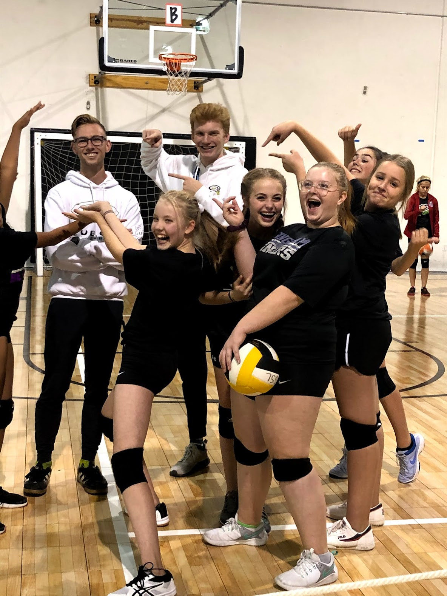

About Me
I was born in Salt Lake City, Utah. I have two brothers and a Vizsla named Enzo. If you're unfamiliar with the breed Vizsla, they are adorable. You can find more information on them here.
Interests
In junior high and high school, I was an avid volleyball player. As of now, I have played for about ten years. During that time, I have been the captain of four different teams. I played a year of club at Mt. O, a year at Club GSL, and two years under Austin Linford at Club V North. Since my junior year of high school, I have been coaching the sport that I love so much. I spent two seasons as a Fall League coach at Club GSL for 10u and 12u teams before becoming a Head Coach for Club V South's 3rd 15u Club team.
Research Interests
As a researcher, I'm primarily interested in applications of Artificial Intelligence (AI) in various fields, such as cybersecurity, athletics, and economics. I also enjoy researching gamification and gamified learning. At the CSRL, I primarily study gamified learning and its effect on uthe emotional experience during ndergraduate education. At the AFRL, I was on a team researching visual object detection and visual object tracking, subfields within computer vision to be applied to autonomous drones. For those unfamiliar with tracking, an example tracking program output is shown below.
Ambitions
Ultimately, I would like to become an AI engineer at a company in the NASDAQ that enables companies to make better management decisions through the use of machine learning. As a secondary job, more in my own free time, I would like to become the Head Coach of a D1 women's volleyball team.